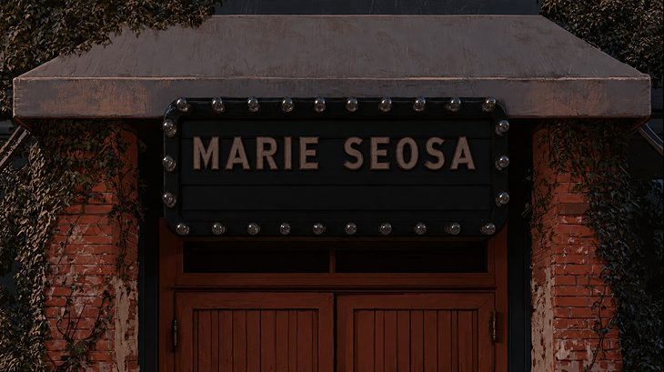
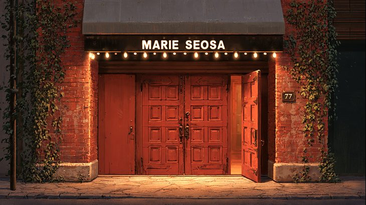
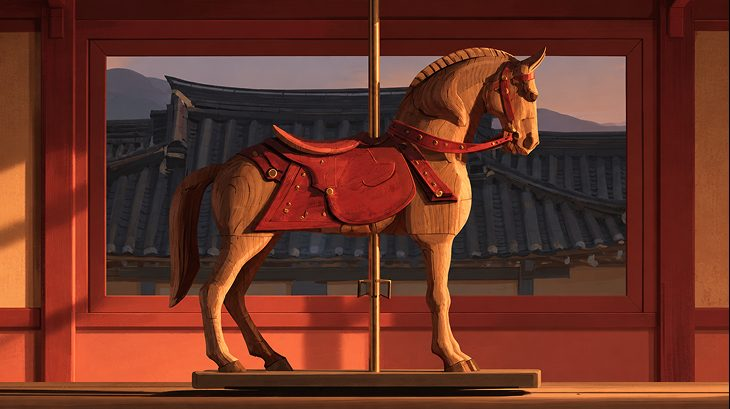
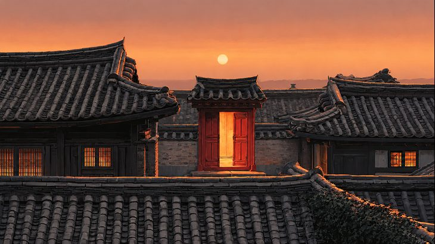

(재)인제군문화재단 주최 · 박인환 시인 탄생 100주년 기념 팝업스토어
마리서사
RE:OPEN
빨간 문을 열면, 1926
1945년 종로, 시인 박인환이 열었던 작은 서점 마리서사.
탄생 100주년, 계동길 77에 그 문을 다시 엽니다.
책장 사이를 걷고, 타자기로 한 줄을 쓰고, 오미자차 한 잔을 나누는 21일.
- 서울 · 계동길 77 위크앨리
- 2026.10.29 (목) — 11.18 (수) · 11:00–20:00 · 금·토 21:00
- 인제 · 시인의 고향
- 서울 전시 종료 후 순회 · 장소·일정 추후 공지
무료 관람 · 2층 낭독실과 1층 골방은 한 번에 한 사람씩 입장합니다 · 전시장 곳곳의 QR 7개를 모으면 2층 바에서 오미자차 한 잔을 드립니다 · 시 원문 전시물은 저작권자의 허락을 받아 사용했습니다.
" 빨간 문을 열면, 1926 "
— 박인환 (1926–1956) · 강원 인제 출생
1926년 강원 인제에서 태어난 시인 박인환은 1945년 종로에 서점 마리서사를 열었습니다. 시인과 화가, 문인들이 드나들던 그 서점은 3년 만에 문을 닫았지만, 그가 남긴 시는 노래가 되고 영화가 되어 지금도 읽힙니다. 탄생 100주년, 우리는 서점의 빨간 문을 다시 엽니다. 이 전시는 시를 읽는 전시가 아니라, 시인의 하루를 지나가 보는 전시입니다.
공간별 안내
01 안내데스크 · 굿즈샵1F · INFORMATION DESK & GOODS SHOP · 박인환, 그리고 인제빨간 문을 열면 가장 먼저 만나는 자리.
빨간 문을 열면 가장 먼저 만나는 자리.
시인의 고향에서 온 것들을 여기 모았습니다.
관람 안내와 QR 체험 시작 안내를 받고, 박인환 코스터·시어 엽서·인제 로컬 굿즈를 만나는 공간입니다. 체험을 시작하려면 안내데스크에서 첫 번째 시어 QR을 찾아보세요. 카드·간편결제가 가능하며, QR 완주 리워드(오미자차)는 2층 바에서 받습니다.
크레딧
- 주최
- (재)인제군문화재단
- 기획 · 제작
- ㈜디아나인사이트
- 공간 설계
- 단디자인
- 자료 제공
- 박인환문학관
02 서문 · 연보의 벽1F · PREFACE & CHRONOLOGY1926 인제에서 1956 명동까지, 서른 해를 한 벽에 세로로 적었습니다.
1926 인제에서 1956 명동까지,
서른 해를 한 벽에 세로로 적었습니다.

03 로비 테이블 맵핑 — 엽서와 원고지1F · TABLE MAPPING테이블 위로 엽서 한 장이 떨어지고, 원고지에 시인의 글씨가 번져 갑니다.
테이블 위로 엽서 한 장이 떨어지고,
원고지에 시인의 글씨가 번져 갑니다.
04 마리서사 재현실1F · MARIE SEOSA, 19451945년 종로의 서점을 서가와 등불로 되살렸습니다. 책장 사이를 걸어 보세요.
1945년 종로의 서점을 서가와 등불로 되살렸습니다.
책장 사이를 걸어 보세요.
05 골방 프로젝션룸1F · PROJECTION ROOM시인이 글을 쓰던 골방처럼 좁은 방. 롤스크린 위로 샌드아트 영상이 흐릅니다.
시인이 글을 쓰던 골방처럼 좁은 방.
롤스크린 위로 샌드아트 영상이 흐릅니다. 한 번에 한 사람씩 입장합니다.

06 낭독실 — 시인의 시를 소리 내어2F · READING ROOM혼자 들어가 시 한 편을 고르고 읽습니다. 녹음된 목소리는 QR로 가져갑니다.
혼자 들어가 시 한 편을 고르고 읽습니다.
녹음된 목소리는 QR로 가져갑니다. 한 번에 한 사람씩 입장합니다.
07 타자기 방2F · TYPEWRITER DESK1950년대 수동 타자기 2대. 시집에서 고른 한 줄, 또는 당신의 한 줄을 쳐 보세요.
1950년대 수동 타자기 2대.
시집에서 고른 한 줄, 또는 당신의 한 줄을 쳐 보세요.
08 목마 포토존2F · WOODEN HORSE검은 목마 앞에서 한 장. 인스타그램에 올리면 바에서 한 잔이 더 가까워집니다.
검은 목마 앞에서 한 장.
인스타그램에 올리면 바에서 한 잔이 더 가까워집니다.

09 1956 대폿집 바 — 시 한 줄, 오미자 한 잔2F · BAR · 일곱 개의 시어QR 7개를 모으면 시 한 편과 오미자차 한 잔.
1956년 봄, 시인은 명동 술집에서 시를 쓰고
친구는 그 자리에서 곡을 붙였습니다.
이 바는 그 저녁을 떠올린 자리입니다. 술 대신 오미자, 노래 대신 시를 주고받습니다. 바텐더가 한 줄을 읊으면 다음 줄을 이어 보세요. 모르셔도 좋습니다 — 종이를 보며 함께 읽습니다.
일곱 개의 시어 — 참여 방법
- ① 모으기전시장 7개 공간의 QR을 스캔하면 시어가 하나씩 쌓입니다. 마지막 하나는 바에 있습니다.
- ② 짓기취향 몇 가지를 고르면 일곱 시어로 나만의 시 한 편이 태어납니다. 활판 엽서로 출력해 드립니다.
- ③ 한 잔완성된 시를 바텐더에게 보여 주면 오미자차 한 잔. 1인 1잔 · 무알코올 · 박인환 코스터 4종 증정.
10 옥상 빨간 문 포토존RF · RED DOOR · 전구 라운지지붕 위, 빨간 문 앞에서 만나요. 해 질 무렵 전구가 켜집니다.
지붕 위, 빨간 문 앞에서 만나요.
해 질 무렵 전구가 켜집니다.
